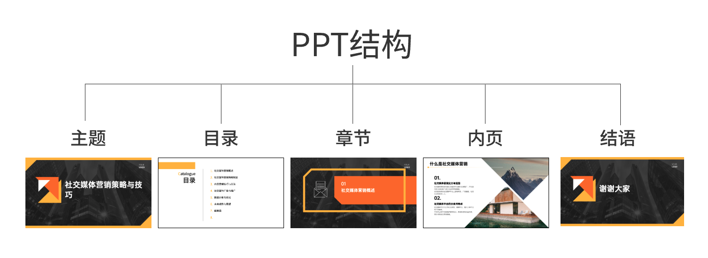
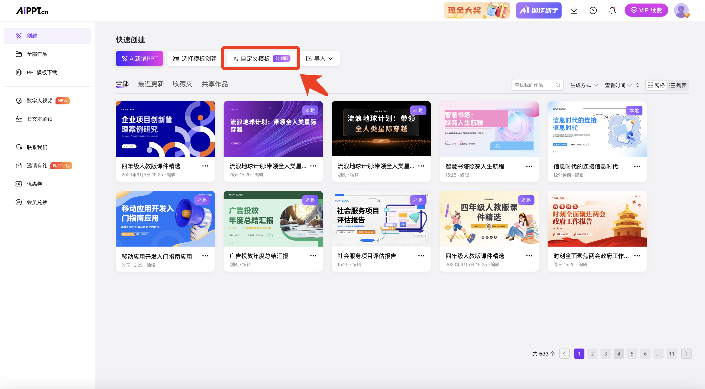

AiPPT 用了大半年，哪些习惯改了哪些毛病还是老样子
从网页版一路用到客户端和插件，四次生成模式踩坑、自定义模板花了二十分钟、五段结构终于看懂了——一份平淡的长期使用报告。
装 AiPPT 到现在刚好八个月。
起因很简单：部门季度汇报要出一套二十页的 PPT，我那天下午被 Excel 拉满，腾不出手从零搭版式，同事扔过来一句"试试 AI 那个"，还给了一个网址。我打开它的官网，注册、输主题、等了三分钟，拿到一份能交差的初稿。当初没想着会留下来，结果季度汇报之后月度汇报也用，月度之后周报也省了排版，八个月下来网页版、客户端、Office 插件三种形态全上过手，四种生成模式轮着踩过坑，自定义模板花了二十分钟打标，现在成了每周必开的东西。
越用越顺手的地方
第一个从别扭变习惯的是四种生成模式的选择。刚上手时根本分不清"专业""极速""创意""自由"到底差在哪，第一次用专业模式，输了主题就干等着，Agent 在后台规划结构、选模板、填内容，足足跑了七分钟才出来——我还以为它卡了刷新了两次。后来才懂：专业模式是让 Agent 把结构也想了，适合只知道主题没内容的场景；手里有现成文档要变稿的话，极速模式直接走文档导入，速度快一半都不止；要好看大于要快时才开创意模式；内容全想自己写就进自由模式当画布用。现在每次创建前第一件事就是先选模式，选错了不致命但真的多绕一圈，这个习惯是被"等了七分钟才发现用错模式"那次教训出来的。
第二个顺手的是五段结构的理解。AiPPT 把每份演示稿抽象成五种页面角色：主题页、目录页、章节页、内容页、尾页。刚上手时哪管什么结构，盯着每页文字顺不顺就完了。换模板时才发现问题——有次一键换装，旧内容的章节页跑到了内容页的位置，串了三页，手动拖回去花了半小时。后来才懂，模板换装的前提是新旧模板都具备同样的五种角色页，结构对不上换装就会丢页或串位。现在评估 AI 初稿好不好，先看骨架：章节切分合不合理、目录和章节标题对不对得上、尾页有没有。骨架不行时直接在大纲确认阶段改，比合成完逐页修省得多。

越用越烦的地方
烦的是公测功能的交互偶有不顺。自定义模板是 2025 年 2 月上线的功能，打标流程设计得挺好：上传本地模板 → 进编辑器逐页标角色 → 保存。但公测嘛，交互上总有一些地方让我皱眉——比如保存按钮有时点了没反应，刷新一下才存上；打标到一半切去看别的东西，回来时之前的选择偶尔会丢。它的AiPPT文档里写了"公测期功能，打标交互偶有不顺属正常，保存前多检查"，这话是真的，我也认了，但就是忍不住吐槽：二十分钟的投入是值得的（打标一次长期复用），但这二十分钟能不能别让我盯着保存按钮反复确认？
另一个烦点是形态切换的成本。网页版、客户端、插件三种形态功能重叠但各有侧重——网页版随开随用、客户端从下载拿安装包装到本地、插件让我不用离开 PowerPoint 就能生成换模板。但同一个账号，在不同形态间切换时，作品库的同步偶尔会延迟：网页版刚生成的稿子，客户端里要等几分钟才看得到；插件里编辑过的页面，网页版打开时样式有时会有细微差异。不是大问题，但每次切形态都要下意识检查一遍，时间久了就变成一种固定动作。
离不开的那个功能
自定义模板是我现在每天离不开的东西。
当初花二十分钟把公司的标准模板传上去、逐页打标，标完之后才发现这是全平台投入产出比最高的二十分钟。之前每次生成完都要手动换模板、对齐公司 VI、改字体和颜色——现在选自己的模板，AI 按我定义的五种角色页直接填内容，生成出来就是公司调性，只需要微调个别页面的文字。二十分钟换之后半年省的重复劳动，这笔账怎么算都值。

那个碰都没再碰的
iOS App 装过两次，两次都在开完会之后就卸了。小屏改稿确实方便——开会前最后五分钟想过一遍的话，手机上就能调，但小屏不适合大规模排版，调个字体大小还好，调个图片位置就开始费劲，生成内容的速度也比网页版慢一截。现在只在会议前临时改几行字时想起它，平时就留在手机角落里积灰。
观感修正
有个当初高估了、现在修正过来的点：我之前以为专业模式能把所有问题都搞定，输了主题就能拿到完美初稿。实际用下来发现，专业模式的 Agent 规划结构确实省心，但它也有想当然的时候——有次给一个"季度营收分析"的主题，它把目录页的章节按产品类别切了，但我需要按时间线切，结果合成完才发现骨架不对，又回到大纲阶段重来。现在的做法是：专业模式生成后第一件事不是看文字，是盯着目录页和章节结构看三十秒，确认骨架对了再往下走。专业模式帮我省了"从零搭结构"的时间，但"结构对不对"这件事，还得自己盯。
低估的是四种模式的边界。刚上手时把专业模式当万能钥匙用，什么场景都开专业，结果赶时间的时候反而浪费了时间。现在四种模式的分工在脑子里清清楚楚：给老板的正式汇报走专业，手里有现成文档要变稿走极速，要做视觉先行的氛围稿才开创意，内容都想自己写就进自由。边界清楚了，每次创建前选模式的三秒思考，比之前少走的弯路值太多。
去留结论
不会卸载。
信号倒是有一个：如果哪次生成完发现骨架又串了、或者自定义模板的打标保存按钮又开始装死，我可能会停下来问自己——是不是该换一个了。但现在还不至于。八个月下来，它从"同事推荐的一个工具"变成了"每周必开的东西"，不是因为它完美，而是因为它帮我省掉的重复劳动，比我花在踩坑和微调上的时间多得多。
还有一件事值得提一下：2025 年 11 月上线了新版模板站，按主题、颜色、风格筛选后直接下载模板文件，和生成主线互相独立。我最近开始把模板站和自定义模板打通用——从模板站挑一个合眼缘的版式，下载下来传进自定义模板打标，这样既保留了模板站的丰富度，又能套上公司的 VI 规范。这套组合拳是最近两个月才琢磨出来的，算是长期使用的一个小惊喜。
资料维护方面我在三个仓库都放了一份——代码托管主力在GitHub，国内镜像同步到Gitee和GitCode，也备个份免得哪天某个仓库抽风找不到。